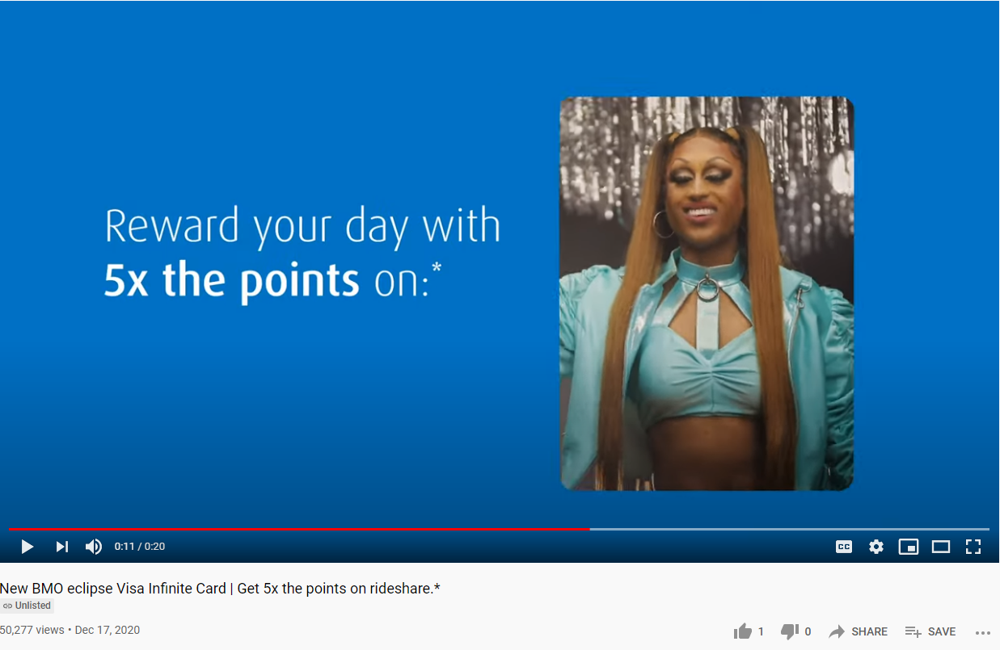
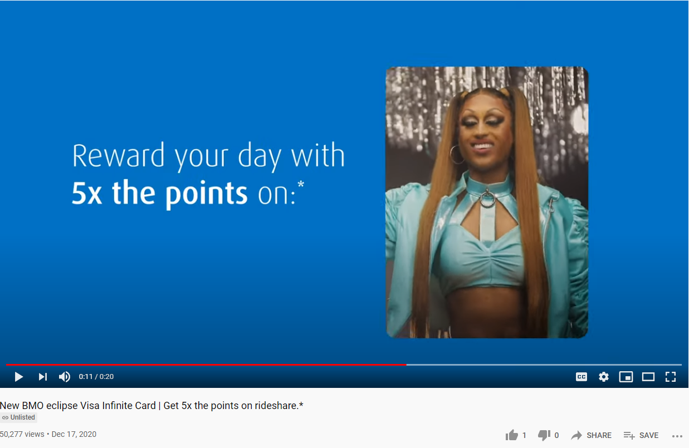
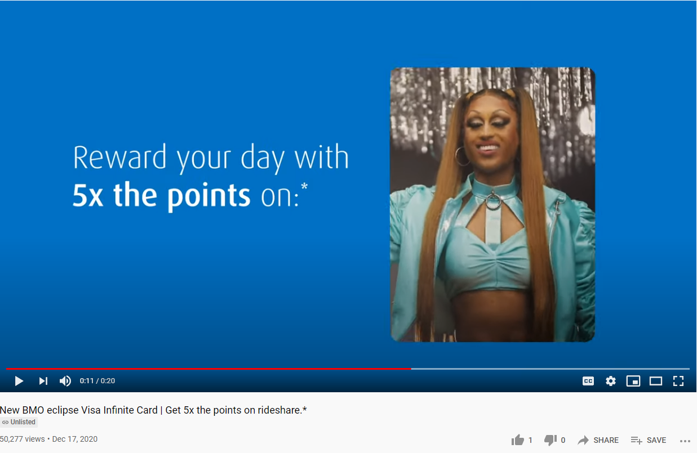

Bank of Montreal - Tranny Commercial
March 1st, 2021
I was looking up an interview video for one of the Globo Homo Schlomo shitbags that I'm doing an article on, when I was shown a video, so bafflingly repulsive, that I thought it was satire at first glance.
I hate to keep making the joke, but I am a little bit thunderstruck. It's not just the utterly repulsive tranny, okay apparently a drag queen, it's the whole "monopolists for equality," thing as well. BMO is a fucking bank, it's a parasitical organization. I guess there's really no better fit for them than a bunch of useless eaters who would all immediately die if nobody could make food for them.
BMO hottie from just 2011, a lifetime ago.
Apparently there are three videos. I'm just going to show them completely without comment, because I think showing them, then showing some "Glossy Magazine," propaganda piece speaks for itself.
Glossy Inc.
TDC_ARTICLE_START
BMO Influences at Scale, With One of the First Campaigns to use Influencer Generated Videos and YouTube Director Mix, to Launch its Millennial-First Credit Card
TDC_ARTICLE_STOP
Translation: We want to destroy young people's financial situation worse than outsourcing and migration already has, so we're targetting the mentally ill ones who can not only tolerate a disgusting pervert on screen, but get REALLY excited when seeing one. Almost all advertising works subconsciously on the "hey, I like this guy," principle, which is why it's so Through the Looking Glass to see this with a viscerally repulsive tranny.
Okay, drag "queen".
TDC_ARTICLE_START
The campaign stars Canada’s Drag Race superstar Priyanka, harnessing the power of influencer generated content & YouTube Director Mix video ad personalization to generate over 100+ pieces of contextual creative.
BMO Bank of Montreal’s new campaign for the BMO eclipse Visa Infinite rewards card is a global first, to combine the power of YouTube Director Mix with the custom content and persuasiveness of the influencer community.
TDC_ARTICLE_STOP
So glad that we have (((Susan Wojkicki))), or however the fuck you spell that kikess's name, doing all this censoring of the goyim, and promotion of... this creature. So glad. This all just goes to show how much we need to vote for Cuckservatives HARDER, because this isn't REAL Capitalism, or something.
TDC_ARTICLE_START
The BMO eclipse Visa Infinite credit card is designed to meet the everyday lifestyle needs of Canadians and provide greater earning potential and flexibility on rewards. The card offers 5X the points for everyday purchases such as food delivery, coffee, groceries and ridesharing services.
These types of everyday rewards have taken on greater resonance among millennials during the pandemic—which has had a pronounced impact on consumer habits as people come to take greater joy in life’s simple pleasures and welcome solutions that enable them to abide by government restrictions and safety measures.
TDC_ARTICLE_STOP
I'm just blown away by the Kikery here. Literally mass censorship + utterly artificial promotion of disgusting trannies + pushing credit cards as cool. We need to make an award for "most jew thing to have ever happened," and I think this could easily be in the top 100.
TDC_ARTICLE_START
The campaign from FCB Canada in partnership with UM and Reprise Canada features drag superstar Priyanka, winner of the inaugural season of Canada’s Drag Race, and Quebec TV personality, author and journalist, Valerie Roberts. It consists of multiple pieces of contextually relevant creative, in English and French, designed to speak to multiple constituencies within the card’s millennial audience—such as cooking enthusiasts, fast food lovers, and TV, music and movie lovers.
TDC_ARTICLE_STOP
I guess here he's just normal pervert.
First of all, there's no such thing as "drag superstar Priyanka," because there's no such thing as a "drag superstar." What there is, more accurately is "literal who promoted by Schlomo Homo."
TDC_ARTICLE_START
“With these new cards, we have re-imagined what a rewards credit card can be and are excited by the potential of this campaign to reach and connect with Millennial Canadians,” said Maja Neable, Chief Marketing Officer, North American Personal and Business Banking, BMO Financial Group. “We have thoughtfully designed everything from the unique look and feel of the card to the engaging unboxing experience and great digital capabilities on top of the benefits that better fit with what Canadians are now looking for: immediate and relevant rewards.
“We wanted to find a way to connect with Millennials – sometimes a challenging audience – so we really had to demonstrate an understanding of how they interact with brands,” said Jennifer Rossini, Group Creative Director, FCB Canada. “Partnering with Priyanka and other relevant influencers gave us the opportunity to promote the card in a social-first, millennial context, using voices authentic to the space.”
TDC_ARTICLE_STOP
 I couldn't find a picture of Jennifer Rossini, so I just guessed. Anyway, that's it for the article. There's actually one more video that I forgot about. It's somehow more disturbing, even though it's this creep just as himself. You have to, I hate to show this to you, watch him eat.
Just in case you were thinking "well, maybe there's this genuine group out there that really wants this stuff," I mean, aside from maybe 1% of the population, perverts and spiteful mutants, no goy, there really isn't. And I have the proof of that, when I clicked on the videos to see them on YouTube.
Although, before we even get there, I need to point out that you can't even find this stuff from YouTube itself. I searched all the different ways and couldn't find this. Instead, you have to be on one of the articles linking these videos. Then, when you actually get to the videos, the comments are deleted, but the ratings aren't, except that... well, let me just show this to you.
Do you see that goy? Let me show you another.
Do you think that two videos, both of which got over 2 million views, would have just 3 likes combined?
It somehow gets weirder.

I couldn't find a picture of Jennifer Rossini, so I just guessed. Anyway, that's it for the article. There's actually one more video that I forgot about. It's somehow more disturbing, even though it's this creep just as himself. You have to, I hate to show this to you, watch him eat.
Just in case you were thinking "well, maybe there's this genuine group out there that really wants this stuff," I mean, aside from maybe 1% of the population, perverts and spiteful mutants, no goy, there really isn't. And I have the proof of that, when I clicked on the videos to see them on YouTube.
Although, before we even get there, I need to point out that you can't even find this stuff from YouTube itself. I searched all the different ways and couldn't find this. Instead, you have to be on one of the articles linking these videos. Then, when you actually get to the videos, the comments are deleted, but the ratings aren't, except that... well, let me just show this to you.
Do you see that goy? Let me show you another.
Do you think that two videos, both of which got over 2 million views, would have just 3 likes combined?
It somehow gets weirder.

JFC this guy is repulsive.
Yeah, so the other videos, with ~1% the views, also have 1 like each. Did the intern who uploaded these videos give them the like himself? Are the likes/dislikes removed constantly? WTF? I mean, we all know that JewTube is totally controlled at this point, but this whole episode is some weird twilight zone shit.
TL:DR: Just look at it's face.
I couldn't find a picture of Jennifer Rossini, so I just guessed. Anyway, that's it for the article. There's actually one more video that I forgot about. It's somehow more disturbing, even though it's this creep just as himself. You have to, I hate to show this to you, watch him eat.
Just in case you were thinking "well, maybe there's this genuine group out there that really wants this stuff," I mean, aside from maybe 1% of the population, perverts and spiteful mutants, no goy, there really isn't. And I have the proof of that, when I clicked on the videos to see them on YouTube.
Although, before we even get there, I need to point out that you can't even find this stuff from YouTube itself. I searched all the different ways and couldn't find this. Instead, you have to be on one of the articles linking these videos. Then, when you actually get to the videos, the comments are deleted, but the ratings aren't, except that... well, let me just show this to you.
Do you see that goy? Let me show you another.
Do you think that two videos, both of which got over 2 million views, would have just 3 likes combined?
It somehow gets weirder.
